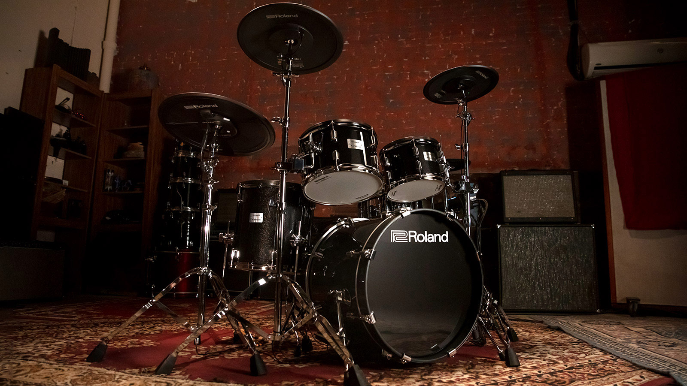
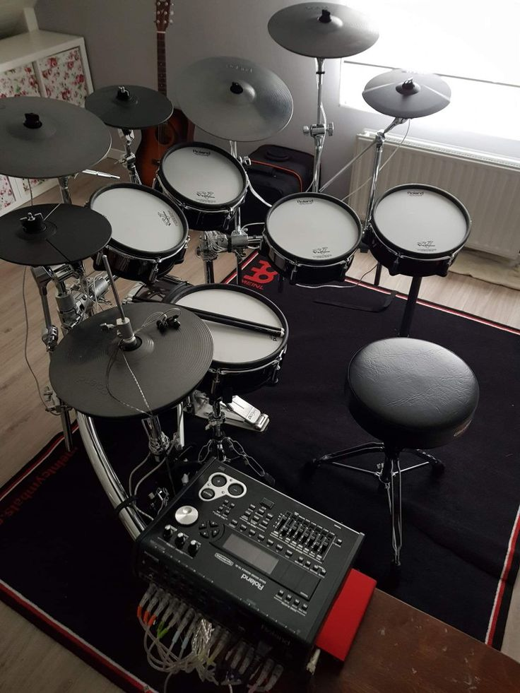
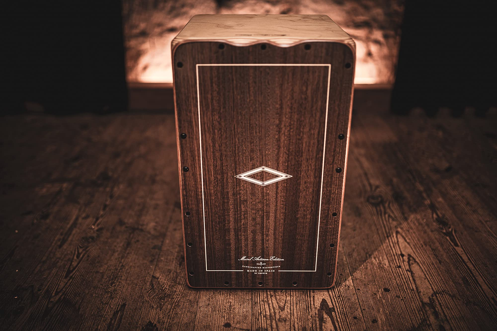

XYZ Music Store
Home
Cart
Contact Us

Acoustic Drums
The classic drum set, perfect for live performances and practice. Offers great sound and dynamics for rock and other genres.

Electronic Drums
Explore cutting-edge technology with electronic drums. Perfect for quiet practice or creating unique sounds in the studio.

Cajón
A portable percussion instrument that offers deep bass and snare-like sounds. Ideal for acoustic sessions and smaller performances.